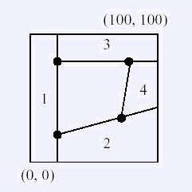
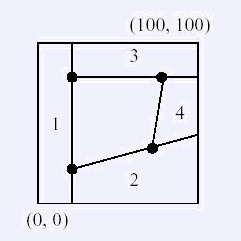

有一个凸p边形(p<=8)，我们希望通过切割得到它。一开始的时候，你有一个n*m的矩形，即它的四角的坐标分
别为(0,0), (0,m), (n,0), (n,m)。每次你可以选择一条直线把当前图形切割成两部分，保留其中一个部分（另一
部分扔掉）切割线的长度为此直线在多边形内部的部分的长度。求出最短的切割线总长度。下面是一个例子。我们
需要得到中间的多边形。

分别沿着直线1，2，3，4进行切割即可，得到中间的四边形。
| F.A.Qs | Home | Discuss | ProblemSet | Status | Ranklist | Contest | 入门OJ | ModifyUser Xeonacid | Logout | 捐赠本站 |
|---|
有一个凸p边形(p<=8)，我们希望通过切割得到它。一开始的时候，你有一个n*m的矩形，即它的四角的坐标分
别为(0,0), (0,m), (n,0), (n,m)。每次你可以选择一条直线把当前图形切割成两部分，保留其中一个部分（另一
部分扔掉）切割线的长度为此直线在多边形内部的部分的长度。求出最短的切割线总长度。下面是一个例子。我们
需要得到中间的多边形。

分别沿着直线1，2，3，4进行切割即可，得到中间的四边形。
第一行有两个整数n, m(0 < n,m < 500)，第二行为一个整数p(3<=p<=8)。以下p行每行为两个整数x, y(0 < x
< n, 0 < y < m)，为按顺时针给出的各顶点坐标。数据保证多边形的是凸的，无三点共线。输入数据无错误。
仅一行，为最短切割线的总长度，四舍五入到小数点后3位。允许有0.001的误差。
样例对应于图中给出的例子。